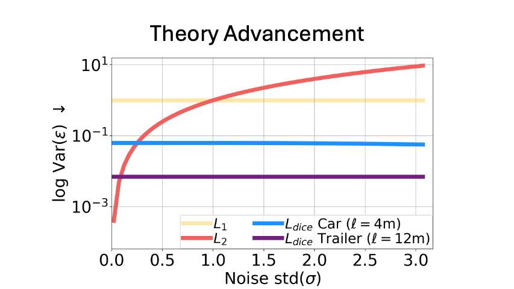
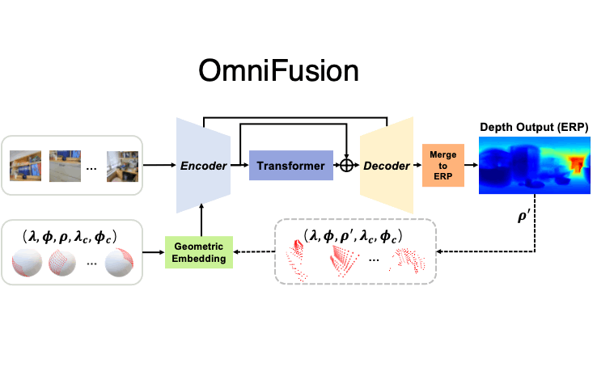
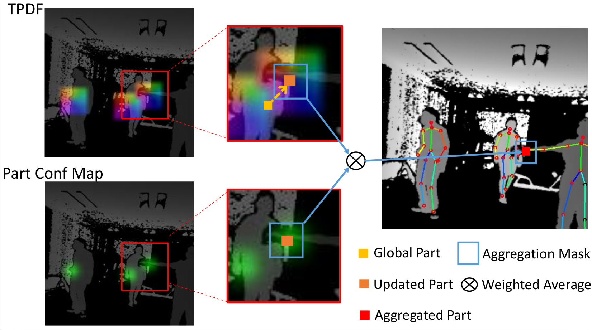
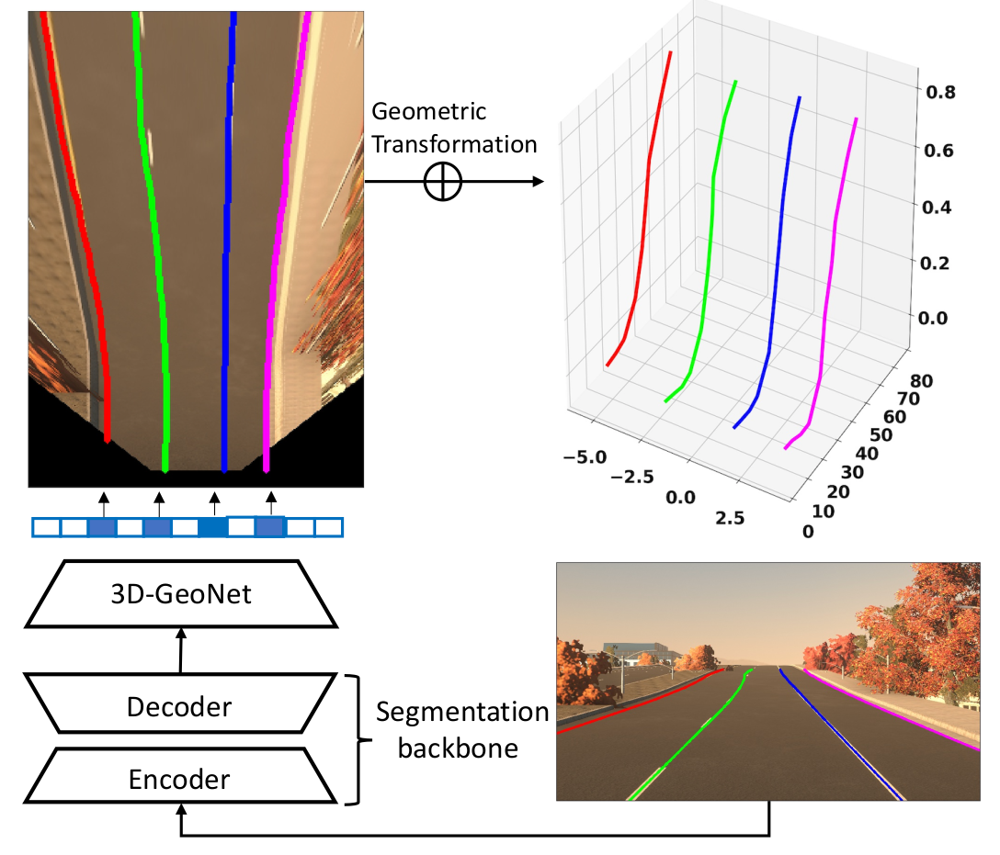
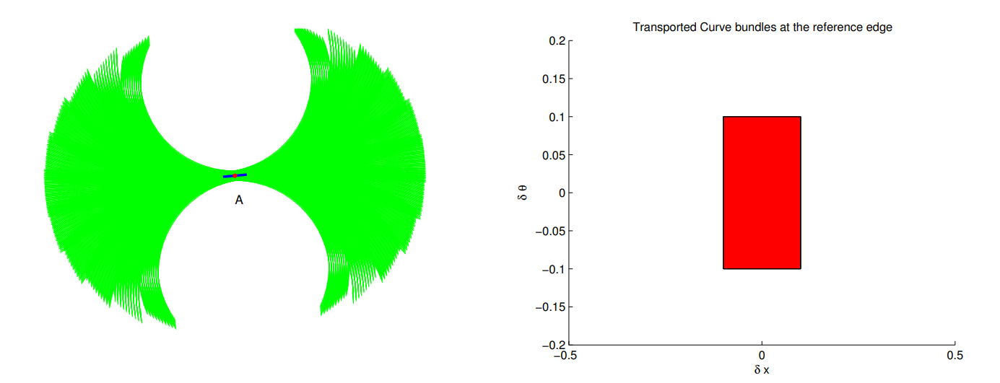
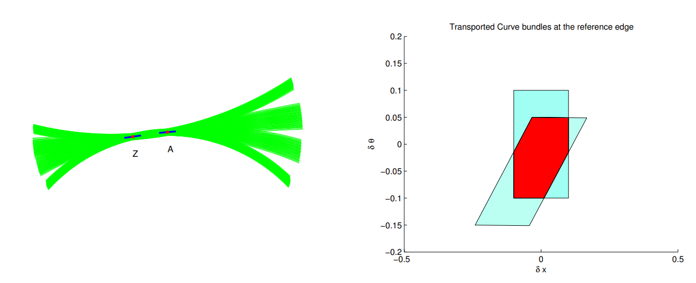
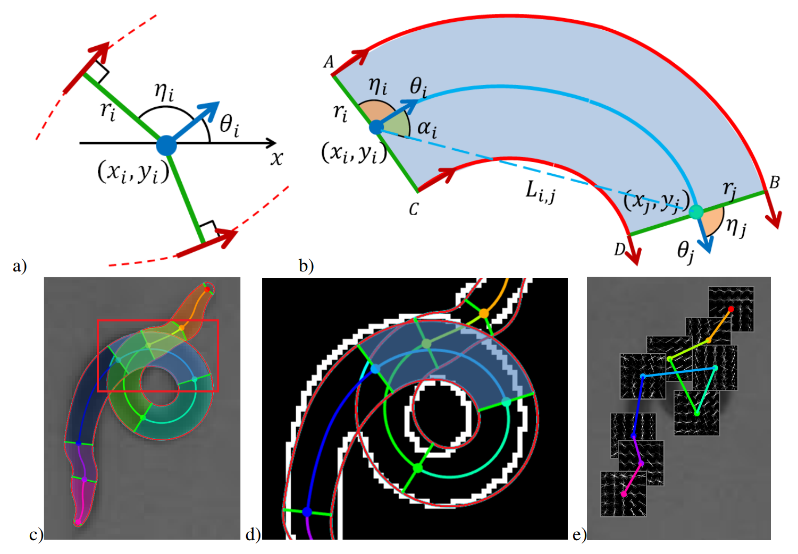
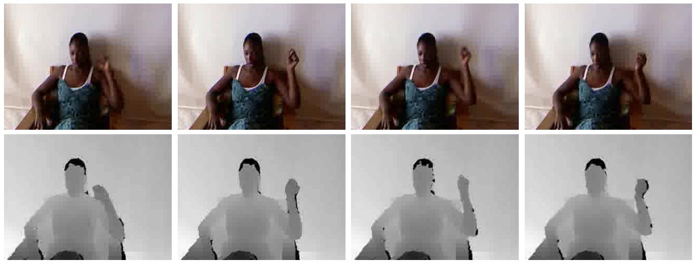
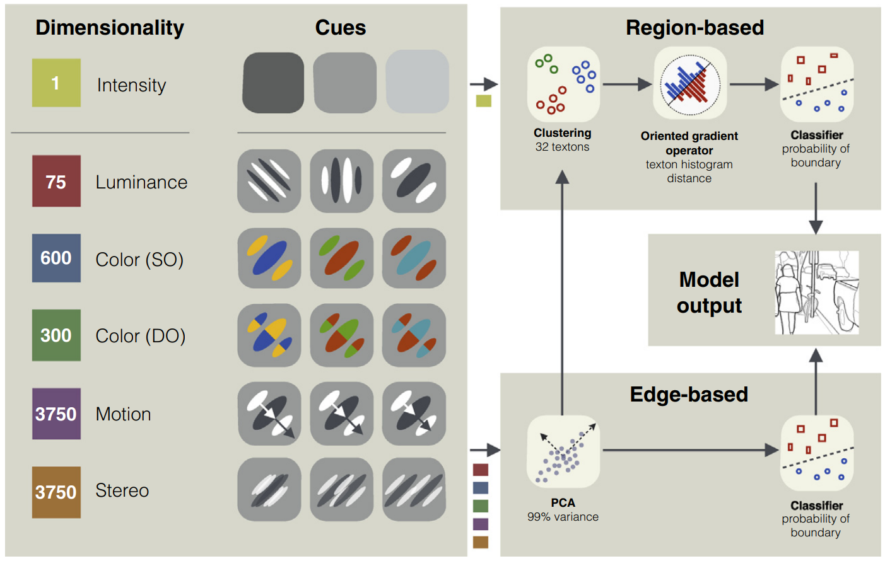
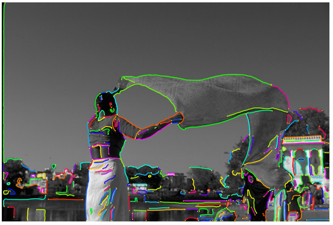

{kind=link}
ResearchMy research interests are centered on formulating generalized 3D perception methods adaptable across various embodiments, as well building interactable scene models from real world. My work aims to foster intelligent interactions between humans and AI while upholding safety in the physical world. |

|
UPNeRF: A Unified Framework for Monocular 3D Object Reconstruction and Pose Estimation
Yuliang Guo, Abhinav Kumar, Cheng Zhao, Ruoyu Wang, Xinyu Huang, Liu Ren, arXiv 2024 [paper] [project page] A monocular object reconstruction framework effectively integrating object pose estimation and NeRF-based reconstruction. A novel pose estimation is introduced to handle depth-scale ambiguity and cross-domain generalization. |
|

|
SeaBird: Segmentation in Bird’s View with Dice Loss Improves Monocular 3D Detection of Large Objects
Abhinav Kumar, Yuliang Guo, Xinyu Huang, Liu Ren, Xiaoming Liu CVPR 2024 [paper] [code] A mathematical framework to prove that the dice loss leads to superior noise-robustness and model convergence for large objects compared to regression losses. A monocular 3D detection method integrated with bird-eye view segmentation. |

|
Behind the Veil: Enhanced Indoor 3D Scene Reconstruction with Occluded Surfaces Completion
Su Sun, Cheng Zhao, Yuliang Guo, Ruoyu Wang, Xinyu Huang, Victor(Yingjie) Chen, Liu Ren CVPR 2024 [paper] [project page] The first neural reconstruction method able to complete the occluded surfaces from large scenes. A key enabler to build interactable environments from real world, generalizing robotic reinforcement learning via reduced domain gap. |

|
3D Copy-Paste: Physically-Plausible Object Insertion for Monocular 3D Detection
Yuhao Ge, Hong-Xing Yu, Cheng Zhao, Yuliang Guo, Xinyu Huang, Liu Ren, Laurent Itti, Jiajun Wu NeurIPS 2023 [paper] [code] [project page] A physically plausible indoor 3D object insertion approach to automatically "copy" virtual objects and "paste" them into real scenes. |


|
Symmetry and Uncertainty-Aware Object SLAM for 6DoF Object Pose Estimation
Nathaniel Merrill, Yuliang Guo, Xingxing Zuo, Xinyu Huang, Stefan Leutenegger, Xi Peng, Liu Ren, Guoquan Huang CVPR 2022 [paper] [code] A keypoint-based object-level SLAM framework that can provide globally consistent 6DoF pose estimates for symmetric and asymmetric objects. |
|

|
OmniFusion: 360 Monocular Depth Estimation via Geometry-Aware Fusion
Yuyan Li, Yuliang Guo, Zhixin Yan, Xinyu Huang, Ye Duan, Liu Ren, CVPR 2022 (Oral Presentation) [paper] [code] The first transformer approach to handle 360 monocular depth estimation with spherical distortion. Novel designs include tangent-image coordinate embedding and geometry-aware feature fusion. |
|

|
PoP-Net: Pose over Parts Network for Multi-Person 3D Pose Estimation from a Depth Image
Yuliang Guo, Zhong Li, Zekun Li, Xiangyu Du, Shuxue Quan, Yi Xu, WACV 2022 [paper] [code] [dataset] A real-time method to predict multi-person 3D poses from a depth image. Introduce new part-level representation to enables an explicit fusion process of bottom-up part detection and global pose detection. A new 3D human posture dataset with challenging multi-person occlusion. |
|

|
Gen-LaneNet: A Generalized and Scalable Approach for 3D Lane Detection
Yuliang Guo, GuanGuang Chen, Peitao Zhao, Weide Zhang, Jinghao Miao, Jingao Wang, Tae Eun Choe ECCV 2020 [paper] [code] [dataset] A pioneer work in predicting 3D lanes from a single image with high generalization to novel scenes. A 3D lane synthetic dataset is introduced. |
|


|
Differential Geometry in Edge Detection: Accurate Estimation of Position, Orientation and Curvature
Benjamin B. Kimia, Xiaoyan Li, Yuliang Guo, Amir Tamrakar TPAMI 2018 [paper] [code] [dataset] Numerically robust techniques to precisely estimate differential geometry attributes associated with image edges, including localization, orientation, and curvature, as well as edge topology. A curve fragment dataset is introduced for the evaluation of precise geometric attributes. |
|

|
Robust Pose Tracking with a Joint Model of Appearance and Shape
Yuliang Guo, Lakshmi N. Govindarajan, Benjamin B. Kimia, Thomas Serre arXiv 2018 [paper] A novel approach for estimating the 2D pose of an articulated object with an application to automated video analysis of small laboratory animals. |
|

|
Robust Pose Tracking with a Joint Model of Appearance and Shape
Lei Zhang, Shengping Zhang, Feng Jiang, Yuankai Qi, Jun Zhang, Yuliang Guo, Huiyu Zhou IEEE Transactions on Circuits and Systems for Video Technology 2017 [Paper] One-shot learning gesture recognition on RGB-D data recorded from Microsoft Kinect. A novel bag of manifold words (BoMW) based feature representation on sysmetric positive definite (SPD) manifolds. |
|

|
A Systematic Comparison between Visual Cues for Boundary Detection
David A. Mely, Junkyung Kim, Mason McGill, Yuliang Guo, Thomas Serre Vision Research 2016 [paper] [dataset] This study investigates the relative diagnosticity and the optimal combination of multiple cues (we consider luminance, color, motion and binocular disparity) for boundary detection in natural scenes. A multi-cue boundary dataset is introduced to facilitate the study. |
|

|
A Multi-Stage Approach to Curve Extraction
Yuliang Guo, Naman Kumar, Maruthi Narayanan, Benjamin B Kimia ECCV 2014 [paper] [code] A multi-stage approach to curve extraction where the curve fragment search space is iteratively reduced by removing unlikely candidates using geometric constrains, but without affecting recall, to a point where the application of an objective functional becomes appropriate. |
Selected Patents
|